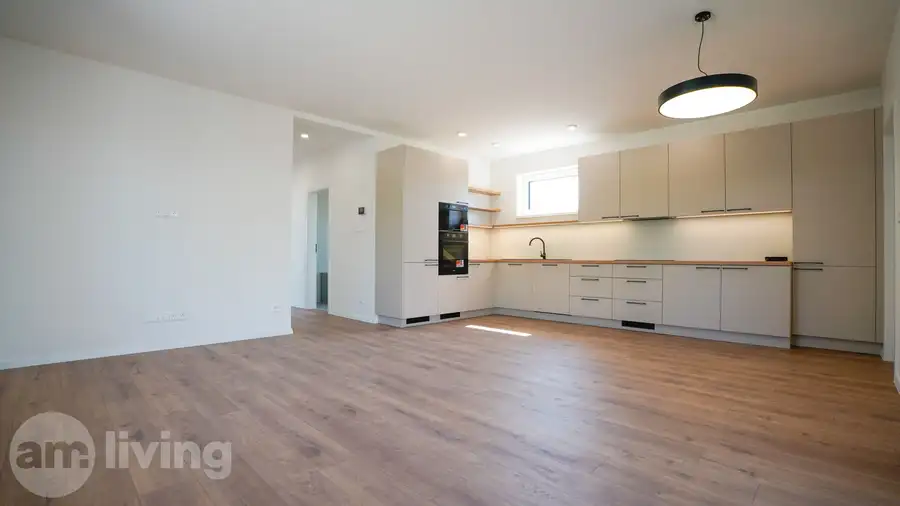
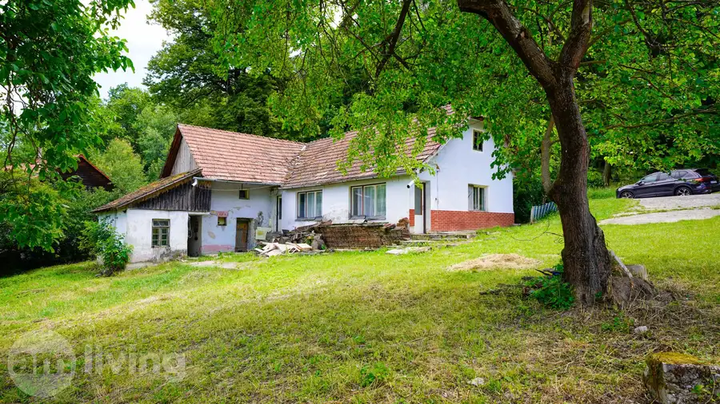
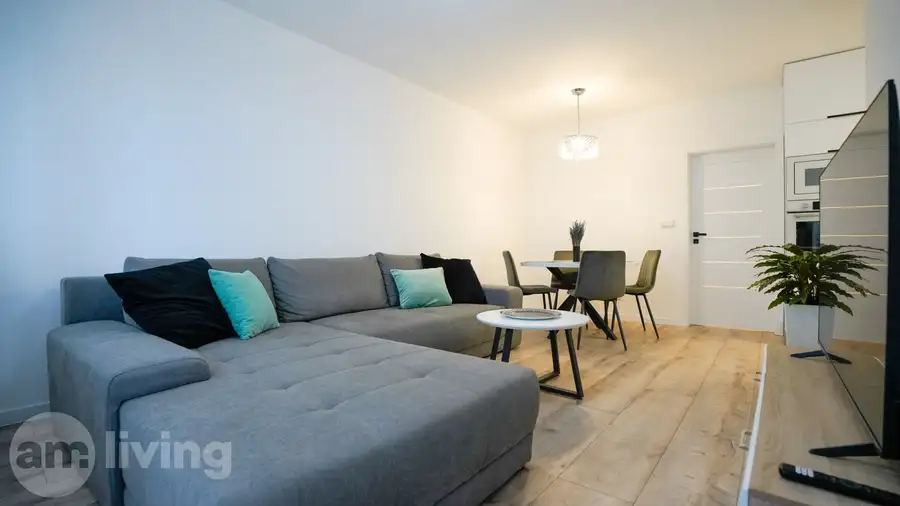
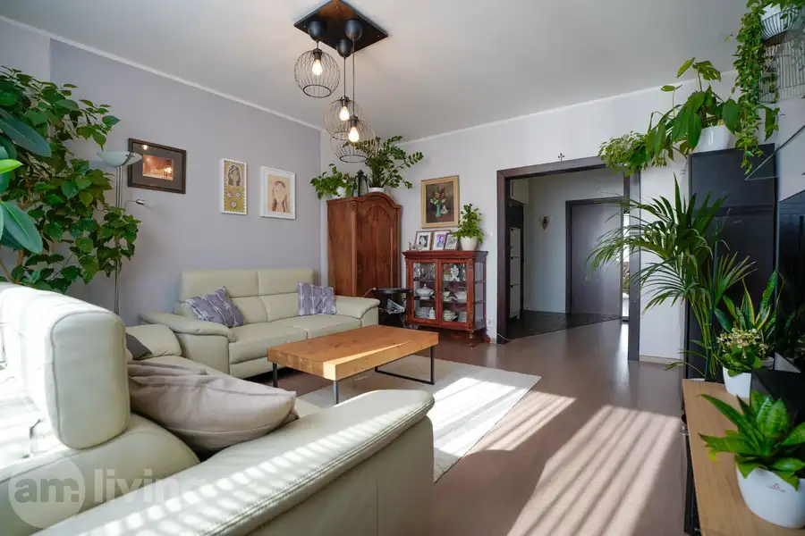
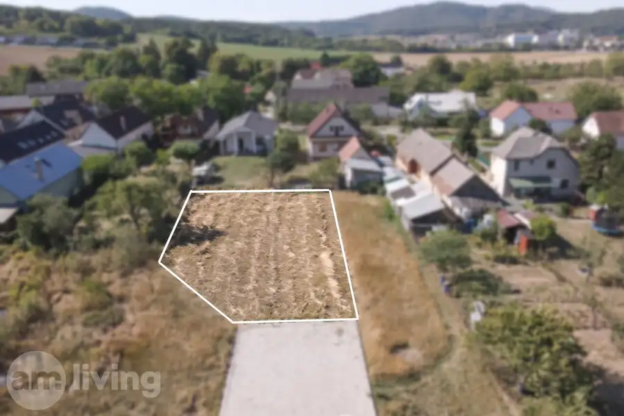
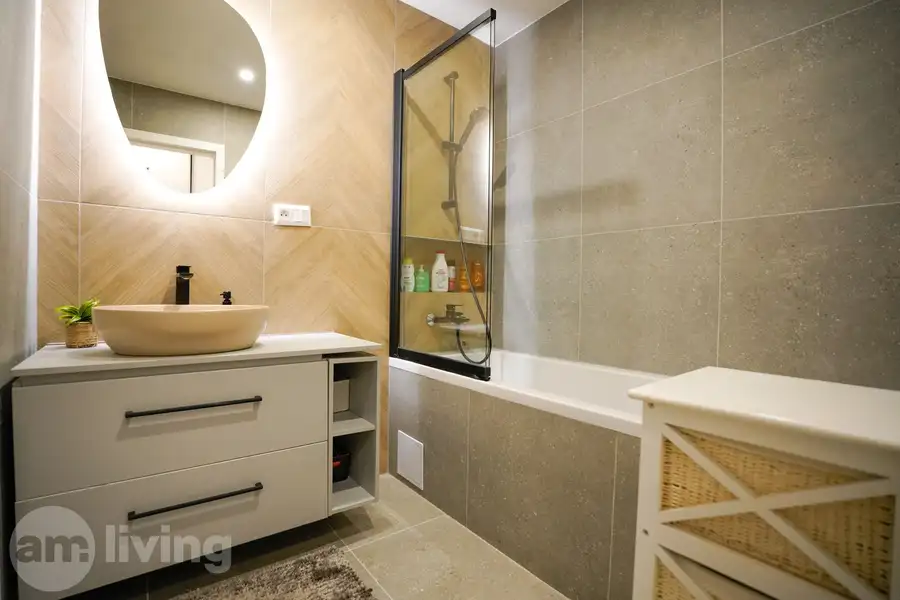
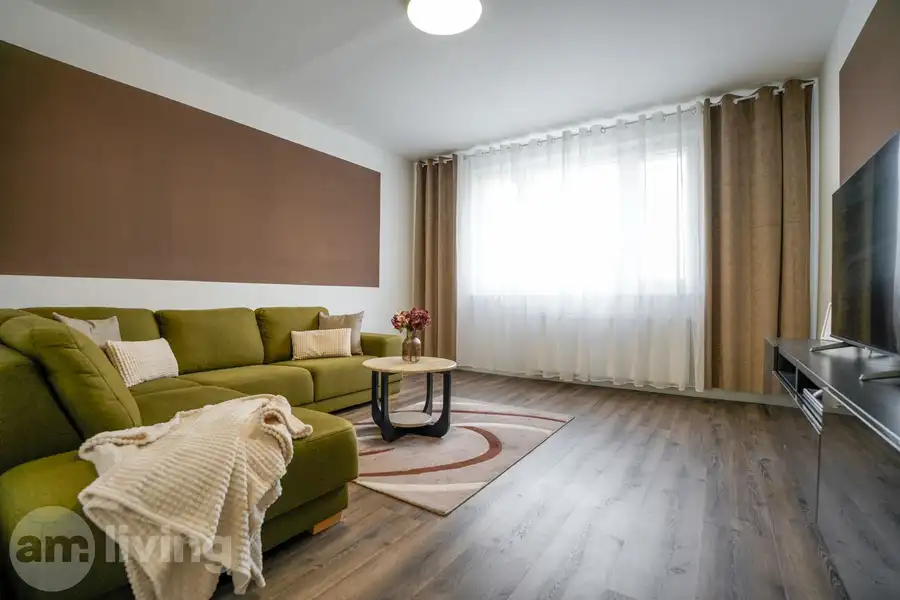
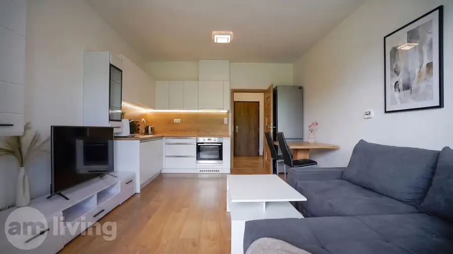
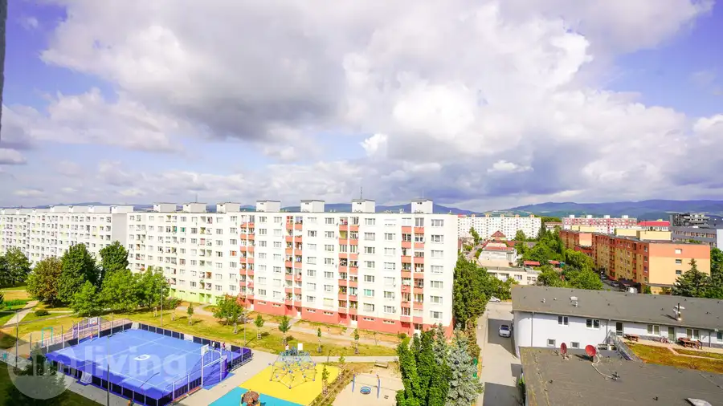

Aktuálna ponuka
9 nehnuteľností, predovšetkým byty, rodinné domy, pozemky. Každá má vlastnú stránku s fotkami, popisom a mapou.
Prezrieť ponukuMatej MichalecRealitný maklér
Realitný maklér · AM living, s. r. o.
Predaj a prenájom nehnuteľností · Nová Dubnica, Trenčín, Dubnica nad Váhom




Byt10 154 900 €NA PREDAJ - 3 izbový byt po rekonštrukcii + loggia v Dubnici n/V Dubnica nad Váhom 3-izbový68 m²5. podlažie AM LIVING realitná kancelária, Vám ponúka exkluzívne NA PREDAJ priestranný 3 izbový byt s loggiou v príjemnej lokalite plnej zelene, neďaleko centra…
Pozemok3 124 900 €STAVEBNÝ POZEMOK na PREDAJ - 698m² N. Dubnica časť Veľký Kolačín Nová Dubnica 698 m² AM LIVING realitná kancelária , Vám ponúka exkluzívne NA PREDAJ stavebný, slnečný rovinatý pozemok o výmere až 698m² vo vyhľadávanej lokalite mesta…
Byt10 162 900 €Zrekonštruovaný 3i byt v CENTRE mesta NOVÁ DUBNICA - 78m² Nová Dubnica 3-izbový72 m²2. podlažie AM LIVING realitná kancelária , Vám ponúka NA PREDAJ kompletne zrekonštruovaný a zariadený 3 izbový veľký byt v priamom centre mesta Nová Dubnica o…
Byt10 134 900 €NOVÁ PONUKA - 2i byt s loggiou po rekonštrukcii 53,5m² N.Dca Nová Dubnica 2-izbový49 m²1. podlažie AM LIVING realitná kancelária, Vám ponúka exkluzívne NA PREDAJ 2 izbový útulný byt s loggiou po rekonštrukcii pri CENTRE mesta Nová Dubnica s…
BytRezervované10 157 000 €2i byt + parking + balkón v Geminim TRENČÍN Trenčín 2-izbový43.52 m²3. podlažie AM LIVING realitná kancelária, Vám ponúka NOVOSTAVBU 2 izbového moderného bytu s balkónom, vlastným parkovaním a s krásnym výhľadom na Brezinu v…
BytRezervované10 129 900 €3 izbový byt s loggiou - Dubnica n/V Dubnica nad Váhom 3-izbový64 m²6. podlažie AM LIVING realitná kancelária Vám ponúka exkluzívne NA PREDAJ čiastočne zrekonštruovaný 3 izbový byt, nachádzajúci sa na 6. poschodí, s pekným…Tomuto výberu zatiaľ nezodpovedá žiadna ponuka. Napíšte mi, čo hľadáte.
Volám sa Matej Michalec. Som realitný maklér kancelárie AM living, s. r. o. a pôsobím predovšetkým v lokalitách Nová Dubnica, Trenčín, Dubnica nad Váhom a Borčice (Trenčiansky kraj).
9 nehnuteľností, predovšetkým byty, rodinné domy, pozemky. Každá má vlastnú stránku s fotkami, popisom a mapou.
Prezrieť ponukuNová Dubnica, Trenčín, Dubnica nad Váhom, Borčice, Dolná Súča a okolie. Ponuku si môžete prezrieť podľa lokality.
Nehnuteľnosti v lokaliteOdhad trhovej ceny, príprava prezentácie, obhliadky, zmluvy a odovzdanie nehnuteľnosti.
Dohodnúť stretnutieNa čo sa pýtate najčastejšie, skôr než sa stretneme.
Odhad trhovej ceny vychádza z aktuálnych ponúk a predajov v lokalite, nie z cenníkových tabuliek. Podmienky Vám poviem pri prvom telefonáte.
Najprv obhliadka a odhad ceny, potom príprava prezentácie (fotografie, popis, inzercia), obhliadky so záujemcami, rezervačná zmluva, kúpna zmluva, návrh na vklad do katastra a odovzdanie nehnuteľnosti. O každom kroku viete vopred.
Najrýchlejšie cez WhatsApp alebo telefón. Termín stretnutia alebo obhliadky dohodneme podľa Vás.